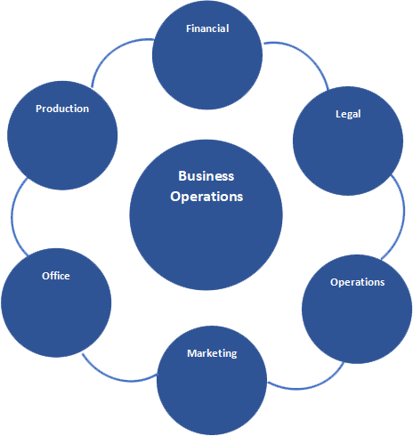

Key Business Operations
The business workflow of the company that is a set of operation to determine the level of performance required, the time is taken, the quality of the outcomes, and quality of the total job or project.
Owners
Mr. Kim Jansen D. Chua is currently a 4th year student taking up BS in Tourism Management in Far Eastern University, Manila. He graduated from Seibo College in 2015, He received a loyalty award and best in physical education award when he graduated in high school. He was born in Caloocan City and now residing in Malabon City together with his family.
Mr. Justine Carlo P. Esteban is a 20 years old student, the second youngest on his family who lives in Manila City with his family, he is currently in Fourth Year Level in Far Eastern University and taking up Bachelor of Science in Tourism Management.
Mr. Jericho M. Ilagan, a 4th yearstudent in Far Eastern University taking up BS Tourism Management. He is graduated elementary and high school in Sto Niño Parochial School in Quezon City. He is a former member of FEU Boosters. He has Tour Guiding Travel services and Culinary NCII certificate. He has a confidence to show to others.
Carlo Miguel S. Concepcion is a 4th year student at Far Eastern University taking up Bachelor of Science in Tourism Management. He grew up in the province of Santa Rosa, Laguna. He is 19 years old. He graduated primary level in Saints Peter and Paul Early Childhood Center and secondary level in Santa Rosa Science and Technology High School. He is also a member of Youth for Christ.
Kim Albert Dela Cruiz is a 4th year college student taking Bachelor of Science and Tourism Management at Far Eastern University Manila. He also attended seminars and trainings that is related to her course. His hobby is to explore and discover new things and also love to travel.